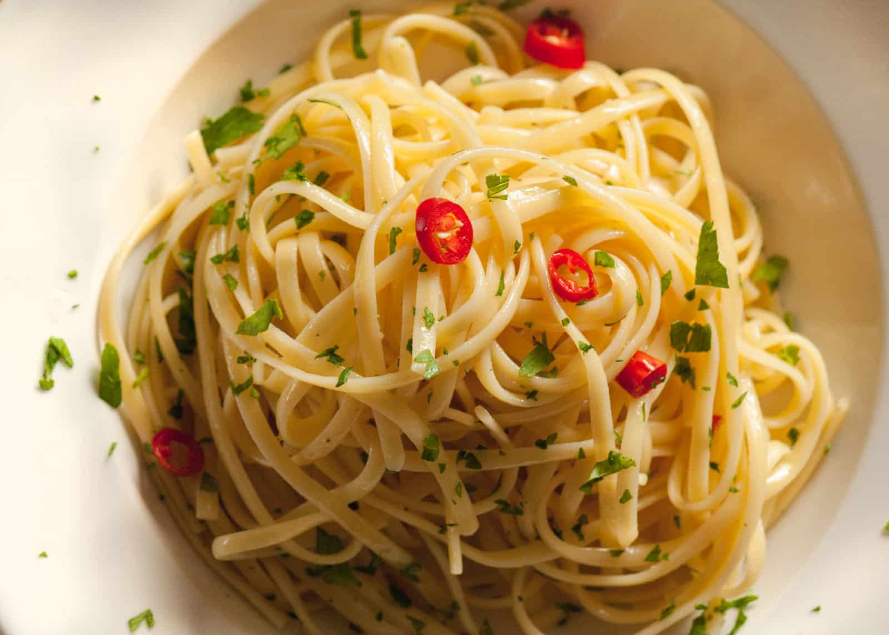

Fiesta Flavors : Garlic, Spicy

Spaghetti Aglio e Olio is a simple Italian dish of garlic, olive oil, parsley, and Parmigiano-Reggiano cheese tossed with cooked pasta.
While believed to have originated in Naples, Italy, various versions of pasta Aglio e Olio can be found in every region of Italy, and its natural simplicity makes it a great base recipe for any home cook's repertoire.
Ingredients
- 1 pound uncooked spaghetti
- 6 cloves garlic
- 1/2 cup olive oil
- 1/4 teaspoon red pepper flakes, or to taste
- salt and freshly ground black pepper to taste
- 1/4 cup chopped fresh Italian parsley
- 1 cup finely grated Parmigiano-Reggiano cheese
Directions
- Bring a large pot of lightly salted water to a boil. Cook spaghetti in the boiling water, stirring occasionally until cooked through but firm to the bite, about 12 minutes. Drain and transfer to a pasta bowl.
- Combine garlic and olive oil in a cold skillet. Cook over medium heat to slowly toast garlic, about 10 minutes. Reduce heat to medium-low when olive oil begins to bubble. Cook and stir until garlic is golden brown, about another 5 minutes. Remove from heat.
- Stir red pepper flakes, black pepper, and salt into the pasta. Pour in olive oil and garlic, and sprinkle on Italian parsley and half of the Parmigiano-Reggiano cheese; stir until combined.
- Serve pasta topped with the remaining Parmigiano-Reggiano cheese.
- Parmigiano-Reggiano : an Italian hard, granular cheese produced from cow's milk and aged at least 12 months.
Chef's kick!
If the pasta doesn't taste good, add more Parmigiano-Reggiano cheese.
Caution! :
Always beware of hot oil and water!
Cost and Time
| Yeild |
Cost |
Cook time |
| Single person | $5 ~ $8 | 20 minutes |
| 2 people | $8 ~ $13 | 23 minutes |
| 4 people | $10 ~ $20 | 30 minutes |

Modifying a Recipe’s Serving Size
The easiest way to modify a recipe is to double it or halve it.
Keep your eye out for recipes that serve either twice or half as many people as you’re cooking for.
When cooking for large crowds, like for 16, multiplying a 4-serving recipe by 4 might work, but it might not, says Julie Grasser of the Pampered Chef Test Kitchens: “It doesn’t work for every recipe.
For example, if you’re making salsa, it’s easy to just chop up some more ingredients to get a higher yield for your 16 guests.
Now, if you have to make rice for 16 and we recommend a certain vessel to cook your rice in, then that may not work.